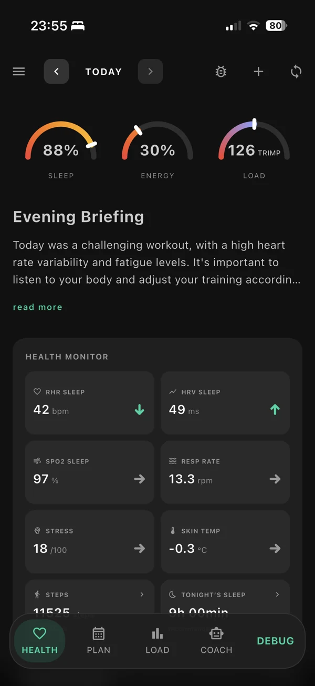
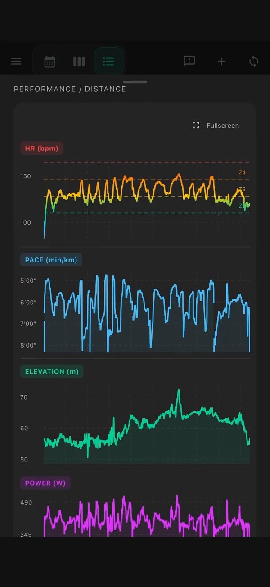
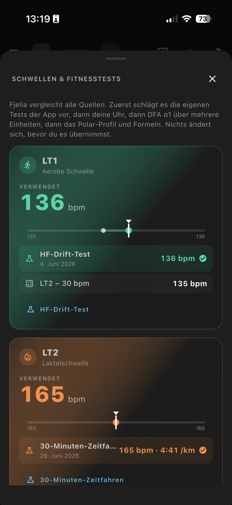
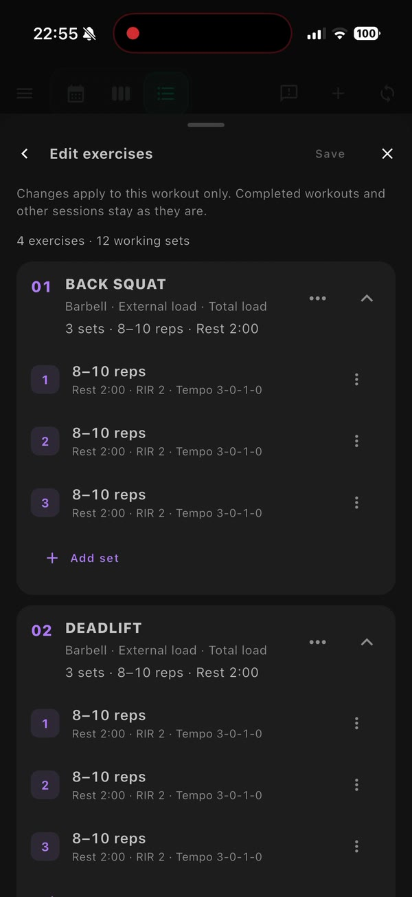
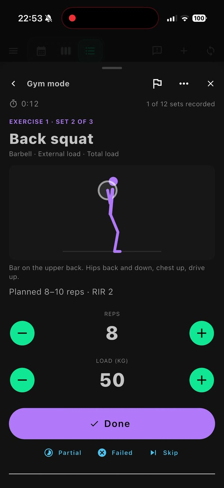
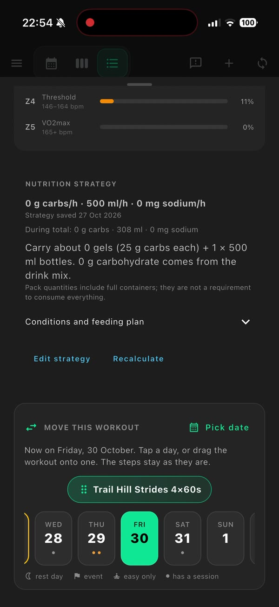

LT1
Aerobic threshold
Bring your heart-rate drift test and available estimates into one view.
Fjelia plans your endurance and strength training around your goals and the time you have. It brings together sleep, recovery and workouts from your watch and shows you each day what fits today — and why.



Set priorities across your races.
Data from your devices, in one view.
FROM HOW YOU FEEL TO WHAT YOU DO
Recovery, planning and recording belong together. See how Fjelia connects your training day.
See sleep, HRV and recent training together. Your daily overview puts recovery beside the session ahead.
Your daily overview and health trends.
Plan around your goals and available time. Review suggested adjustments and choose what to apply.
Your planned week, with sessions in context.
Send supported workouts to your connected platform, or record in Fjelia with optional GPS and Bluetooth sensors. Review the result afterwards.
Recorded heart rate, pace and elevation.
Planning, health trends and recording are core features. FjeliaPro adds AI-led daily proposals and deeper reviews. Real app screens; their language may differ from the website.
THE BIG PICTURE. THE SMALL DETAILS.
A plan for your goals. A clearer view of your body. A coach when you need one.
MULTI-RACE TRAINING PLAN GENERATOR
Marathon, cycling event, trail race. Add your races and let Fjelia generate one periodised plan that brings them together.
Dates, sports and A, B or C priorities define how your race goals fit into the season.
Your sports, weekly hours and rest days shape the plan.
Training phases account for your race dates and priorities, including lighter training before key races and recovery afterwards.
Planned, completed and extra sessions, with weekly progress across your sports.
A month of training, with sport colours and clear planned and completed markers.
Your races with priorities, distances, elevation, dates, target times and countdowns.
Real app screenshots. Select a screen to enlarge.
Less guessing. More understanding.
LT1, LT2 and FTP, together. See your tests and connected-device values side by side, then choose what you use for training.
Bring your heart-rate drift test and available estimates into one view.
Review your 30-minute test alongside other sources. Running and cycling have their own values.
Compare cycling power estimates and values from your connected devices, in watts.
See the source. Compare the values. Changes are only applied when you confirm.
Your heart-rate thresholds, with test results and sources.
Separate cycling LT2 and power values, with their sources.
AI COACHING. YOUR CHOICE.
Ask about a workout. Make sense of your recovery. Choose where your AI runs.
Download an optional local Qwen model on supported devices, or configure a cloud provider with your own key in Settings.
The real AI selection in Fjelia. Screenshot from the German beta.
OPTIONAL SUBSCRIPTION
More coaching depth: adaptive daily training, weekly and season reviews and detailed analyses.
FjeliaPro uses Mistral models via Mistral servers in the EU by default. OpenAI is the fallback.
A look inside the app
Plan strength sessions, log each set in Gym mode, and prepare nutrition for the workout ahead.

01 / REAL APP WALKTHROUGH
Adjust exercises, sets, reps, load, rest and effort for the session.

02 / REAL APP WALKTHROUGH
Record reps and load, complete a set and move through your workout with the rest timer.

03 / REAL APP WALKTHROUGH
Review the session’s carb, fluid and sodium targets, then see the options for sending it to your watch.
For linked sessions, compare planned and completed sets. Strength details show volume and estimate 1RM only for eligible loaded sets (1–10 reps).
Strength activities appear in training history. Load, form and heart-rate/zone summaries use recorded activity load or HR data; lifting volume alone does not create cardiovascular load. Review a load-increase proposal before applying it; it requires two comparable qualifying sessions.
Swipe to explore strength planning, Gym mode and workout fuel.
Sleep, energy, training load and your health monitor.
Sleep performance, time asleep and your sleep stages.
Compare your overnight HRV with your longer-term trends.
Explore heart rate zones, speed and elevation together.
Distance, time, heart rate and training load in one view.
Review blood pressure over the day, week and month.
Screenshots show the developer’s own data from a beta version. Available features and measurements depend on your connected devices. Select a screenshot to enlarge it.
KNOW WHAT CONNECTS
Bring completed activities into Fjelia, send supported planned workouts out, or record directly with Bluetooth devices. Each connection has its own role.
Swipe the table to compare connections.
| Connection | Activity import | Planned workouts | Live Bluetooth recording |
|---|---|---|---|
| Garmin Connect | Completed activities | Endurance + supported strength | — |
| COROS | Completed activities | Endurance · experimental upload | — |
| Polar Flow | Completed activities | Manual upload · HR-zone targets | — |
| Suunto | Completed activities | Share as text | — |
| Apple Health | Workouts · iOS | — | — |
| Strava | ZIP archive import | — | — |
| MyWhoosh | Completed activities | — | — |
| Polar H10 | — | — | ECG + heart rate + RR intervals |
| Concept2 PM5 / FTMS | — | — | Workout data · compatible equipment |
| RENPHO BLE | — | — | Weight + supported body composition |
| Omron / Hilo cuff | — | — | Blood-pressure measurements |
Uploads go to the connected platform; sync its app to your watch afterwards. Polar needs a Flow website login and currently accepts heart-rate-zone or untargeted phases. COROS uses an experimental Training Hub route. A dash means this connection does not provide that function.
Strava is a file import, not a live account sync. No planned-workout delivery to Apple Watch is included. Available data depends on your device, permissions and service.
Your history comes too. Import a Strava archive, including activities, routes and photos, directly on your iPhone.
Garmin can send supported strength exercises, sets, reps and loads; rep ranges, tempo and effort stay in Fjelia. A completed watch workout returns as one activity. Fjelia reconciles matching Gym logs when it recognizes them.
Manually send supported endurance workouts using your Polar Flow website login, then sync Flow to your watch. Heart-rate zones follow your Polar sport profile. Strength sessions are shared as an exercise list.
Supported endurance workouts upload automatically while your COROS account is connected. Activities import back to Fjelia. For strength, share an exercise list and enter the session in COROS.
Workout details shown on the watch depend on provider and device support. Your planned strength session remains saved in Fjelia.
Concept2 RowErg, SkiErg and BikeErg with a PM5: Fjelia connects over the PM5’s own Bluetooth profile, on every firmware, and shows a live cockpit with pace per 500 m, stroke rate, watts, distance and heart rate, also live ECG from a Polar H10. Stroke data, force and drag factor stay with the session, which is saved as an activity and can be shared as a FIT file.
Rowers from other brands and further indoor equipment with the standard Bluetooth fitness-machine profile (FTMS), such as indoor bikes, treadmills, cross trainers and stair climbers, record the same way. Add any standard heart-rate strap.
Blood pressure: Omron monitors with a supported model profile and monitors with the standard Bluetooth blood-pressure service hand over their stored readings; a Hilo cuff measures on request. Save your monitors once in the settings, then measure from the + menu.
Support depends on model and firmware. Compatible FTMS machines can accept workout targets after you authorize control for the session; Concept2 PM5 recording is read-only.
Choose accounts and devices during setup. Screenshot from the German beta.
Health data is personal. Your Fjelia database stays on your phone. You choose the services you connect.
Cloud AI receives the context you approve. You choose the AI mode.
Names are trademarks of their respective owners. Fjelia is an independent project and is not affiliated with or endorsed by any of them.
Weather for your training
Compare forecasts and check wind, UV and rain radar before your next outdoor session.
Compare hourly temperature and rain forecasts from several weather services.
Check the 14-day outlook for your upcoming sessions.
Rain radar, wind, cloud cover and sunrise times in one view.
Fjelia is in public beta. Try it in your daily routine and help improve future releases.
Get Apple's free TestFlight app on your iPhone. It lets you install and update beta apps.
Open the beta invitation on your iPhone, accept it and install Fjelia through TestFlight.
Complete setup and choose Apple Health or a supported service. Allow the first sync time to bring in your history.
Health data, training plans and charts also work without AI. Explore your coach options →
Answers to common questions about Fjelia.
The core app includes training plans, health trends, recording, device connections and export. FjeliaPro is optional and adds deeper AI coaching and analyses. Using your own cloud API key may incur charges from that provider.
Check the TestFlight invitation for current iPhone requirements. Free AI works without Apple Intelligence. For local Apple AI, you need a compatible device with iOS 26+, Apple Intelligence enabled and a supported language.
The iPhone beta is available through TestFlight. Android has a separate community edition, Fjelia CE, with a different feature set; see Android details. There is no separate Apple Watch app or direct planned-workout delivery to Apple Watch. Watch activities can arrive through Apple Health on iOS or a connected vendor service.
No. You can connect Apple Health or supported services including Garmin, Polar, Suunto and COROS. Available metrics depend on what each device measures and each service shares. Some connections may be unavailable in a particular beta build.
Your database stays on your device. Connected services exchange data directly with your phone. Optional cloud coaching sends the context you approve to your selected provider. Weather and maps contact their providers when used. Read the full privacy policy.
Deleting Fjelia removes its local database. You can revoke service access and Apple Health permissions separately. Delete any backups or exports you created from wherever you saved them. Data held by connected services must be managed with those services.
Fjelia is for fitness and general wellness. It is not a medical device and does not diagnose or treat conditions. Discuss health concerns with a qualified healthcare professional.
From the latest beta
In November, your training history comes with you to Fjelia: import your Strava ZIP archive directly on your iPhone, including activities, recorded routes and any photos or videos it contains. The importer recognizes existing sessions and adds missing photos. You can also import individual FIT, GPX and TCX files.
You can rename activities in Fjelia, add your own pictures and share them as styled cards. Deleted sessions no longer reappear after the next sync; you can restore them under “Recently deleted”. When you ask about a workout, the AI coach also considers your plan and the sessions before and after it.
COROS workouts now include routes and heart-rate graphs. Importing sleep, HRV and stress data has also improved. A new overview brings together your LT1, LT2 and FTP training thresholds. Other additions include waist-measurement history, DWD weather forecasts and short-term rain forecasts for planning your training in Germany.
October turned Fjelia into a training partner: strength workouts with a gym mode, a fuel plan for every session, Polar sync, and an app that speaks your language.
Report a problem or share an idea
Tell us about crashes, blocked actions, incorrect values or layout issues. Include your app version, device and steps to reproduce; feature ideas are welcome too.
Fjelia is licensed under the GNU General Public License, version 3 or later. Explore the code, build the app and help improve it.
Not a medical device. Recovery, readiness, blood-pressure and training values are informational and do not replace advice from a doctor. Some integrations are unofficial. Provider updates may affect syncing or availability.